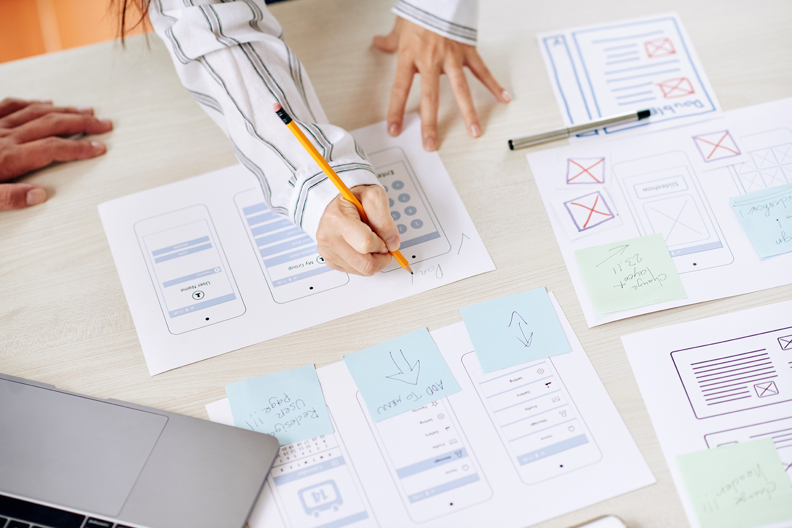
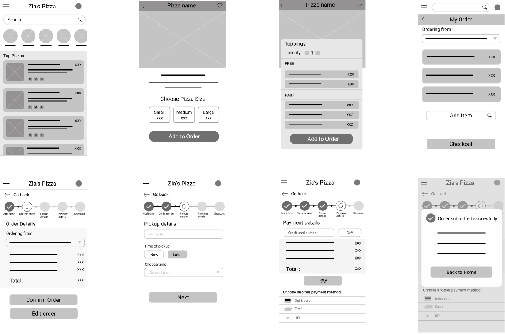
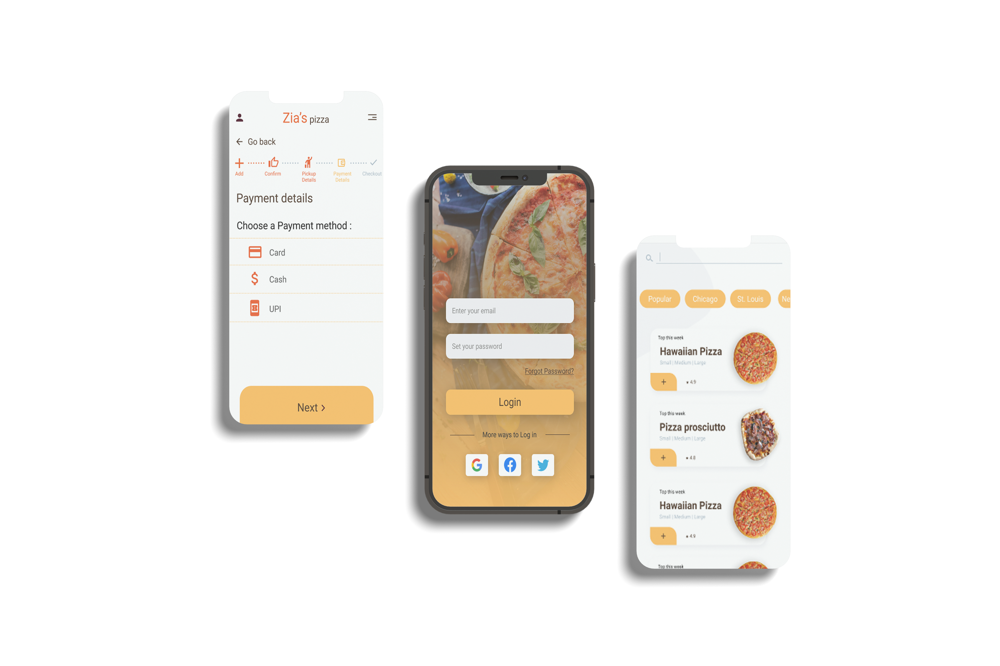
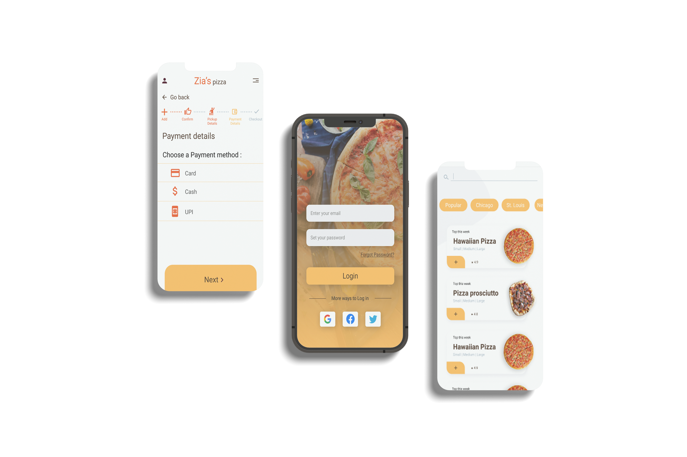

Zia’s pizza is a regional pizza maker located in the suburbs of a metropolitan area. Zia’s pizza is determined to deliver healthy food specially pizza and other side dishes. The goal was to design a dedicated mobile app for Zia’s pizza where customers can order healthy and fresh food and pickup according their own schedule.

I conducted interviews and created empathy maps to understand the user I’m designing for and their needs. A primary user group identified through research was working adults who lack the time to cook meals. The user group confirmed the initial assumptions but the study also revealed that time was not the only factor limiting the user from cooking their meal. Other user problems included obligations, language barriers and interests that make it difficult to get groceries for cooking or go to restaurant in person.
To lead a healthy lifestyle and maintain work-life balance and to reduce the time to be invested in cooking so that they can treat more patients.
Products that are available are mostly text-heavy and hard to navigate. There are not much fast and healthy pickup options near me
I am Dr. Sumit Ghosh and I need healthy meal option because I often don’t have enough time to cook.
To taste all the delicious foods my new community has to offer.
“It’s frustrating for me when people won’t take time to let me find right words to speak to them in English.”
Akila is a student who wants a meal option in her language as she wants to experience all the great foods their new community has to offer
Mapping Sumit's journey revealed how helpful it would be for users to have access to a dedicated Zia's Pizza app.

Before moving onto high fidelity wireframes and mocks, I wanted to get a feel for what the core of the app would look like when put in front of me
Then I converted favorite parts of my paper wireframes into digital wireframes using Figma
It's my most favorite part of the design process : Creating Mockups.
After the usability studies, Users said that they wanted the confirm page to be more prominent after order was successful. So I made this change to my design
After the usability studies, Users said that they wanted the confirm page to be more prominent after order was successful. So I made this change to my design
 

I used the colors that closely matches the color of a Pizza. This felt like the perfect fit for the branding of Zia's Pizza. In font, I used the ever popular Roboto font as it is more soothing to the eyes.
#F1F1F4
#A8B8C5
#FEBC5A
#412C1D
#EC5821
#FF9B07

This app makes users feel like Zia’s Pizza really think about how to meet user’s needs.
While designing the Zia’s pizza app, I learned the first ideas for the app are only the beginning of the process. Usability studies and peer feedbacks each iteration of the app’s design.
Be sure to checkout the creation process of the app!